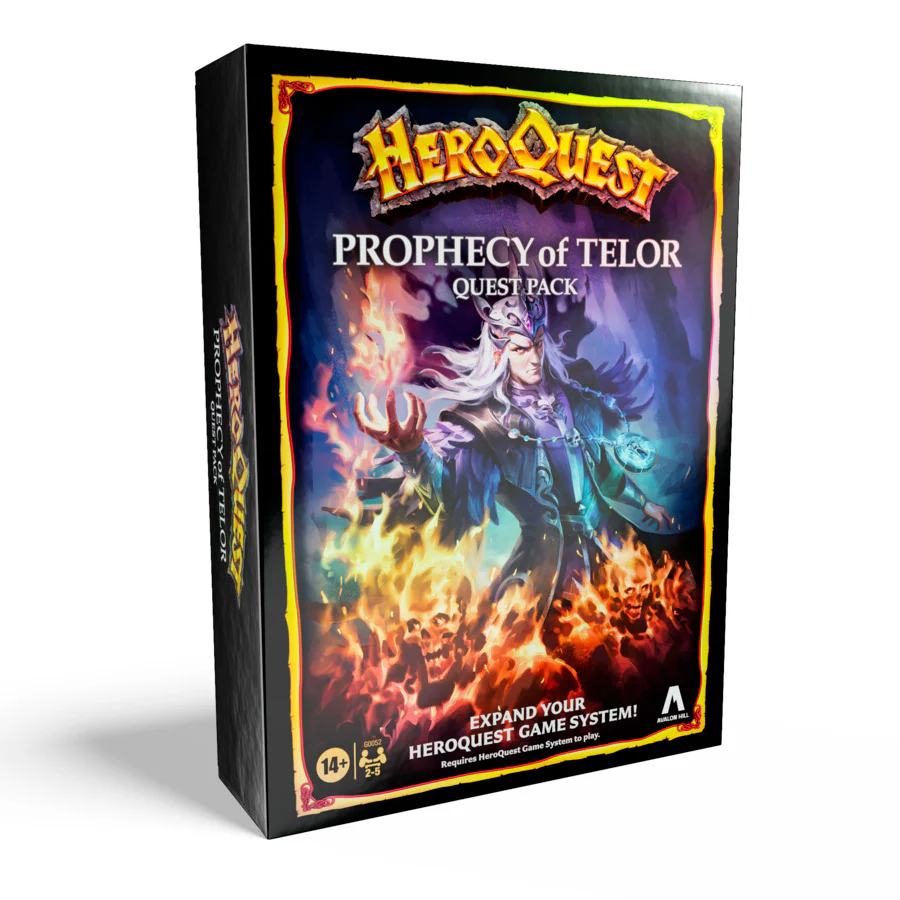

HeroQuest: Prophecy of Telor
"HeroQuest: Prophecy of Telor" is an expansion for the classic board game HeroQuest. This expansion adds new adventures and more monsters to the original game. The storyline of the expansion revolves around a "fallen dread magician" named Telor, who is trapped inside the Talisman of Lore. The heroes must prevent Zargon from using this to resurrect the sorcerer.
The expansion includes 13 new quests and additional miniatures. Players can take on the role of a warlock.
This expansion is designed to be used in conjunction with the original HeroQuest game, and players will need the core box to fully enjoy the new content and features introduced in "Prophecy of Telor."
Contents
The "HeroQuest: Prophecy of Telor" expansion includes the following components:
-
Quest Book: A 13-part quest book featuring the campaign to
defeat Kellar.
Link: HeroQuest: Prophecy of Telor Quest Book -
Miniatures: 15 plastic figures, including:
- 1 Warlock
- 1 Gargoyle
- 1 Abomination
- 2 Skeleton Warriors
- 2 Zombies
- 2 Orcs
- 1 Warlock in Demon Form
- 1 Dread Warrior
- 2 Goblins
- 2 Mummies
-
Cards: 14 Game Cards, including:
- Five Warlock cards
- Four Artifact cards - Spell scrolls
- Five Equipment cards - Potions